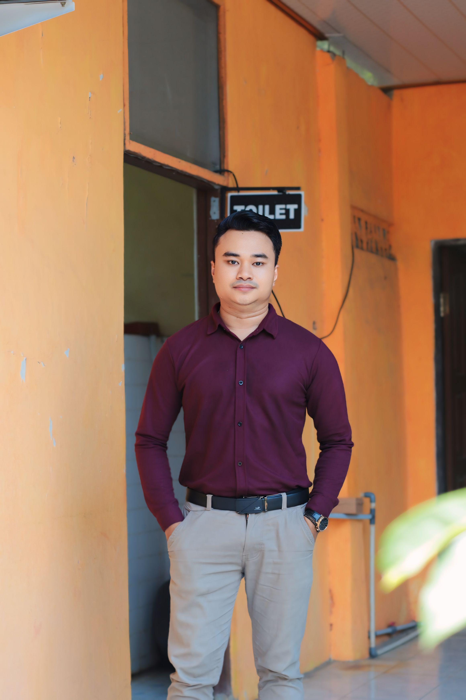
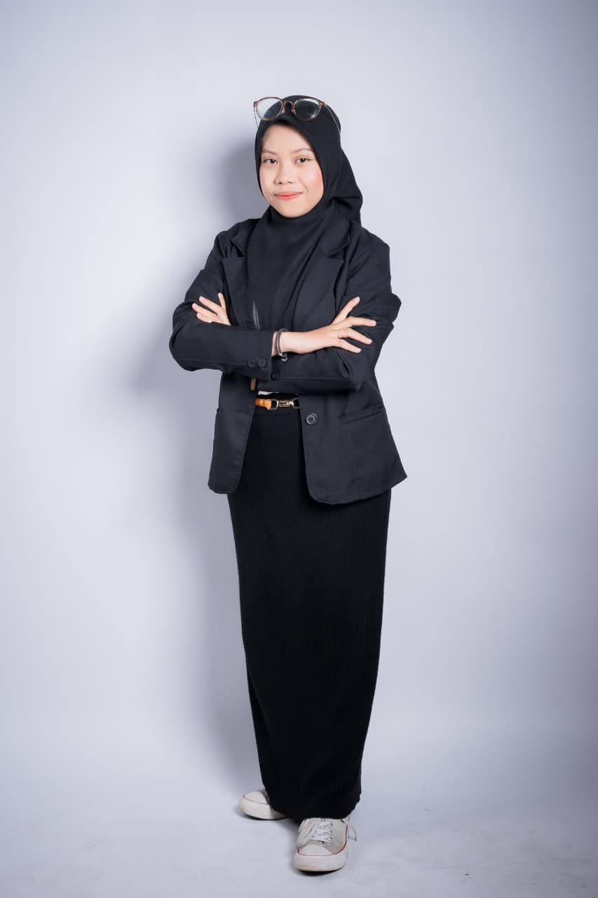
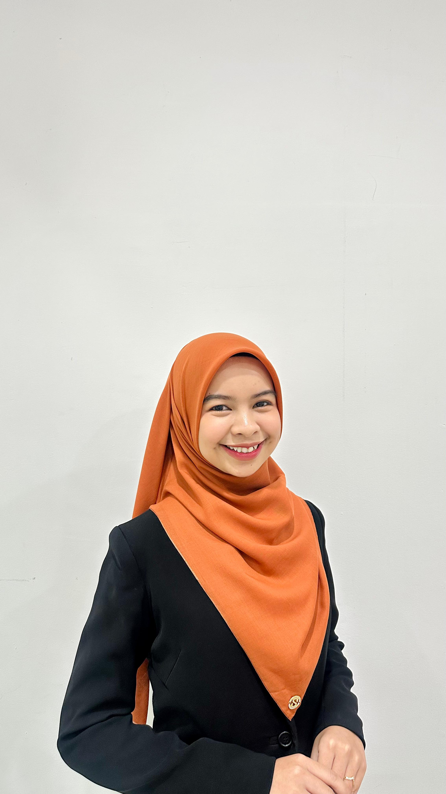
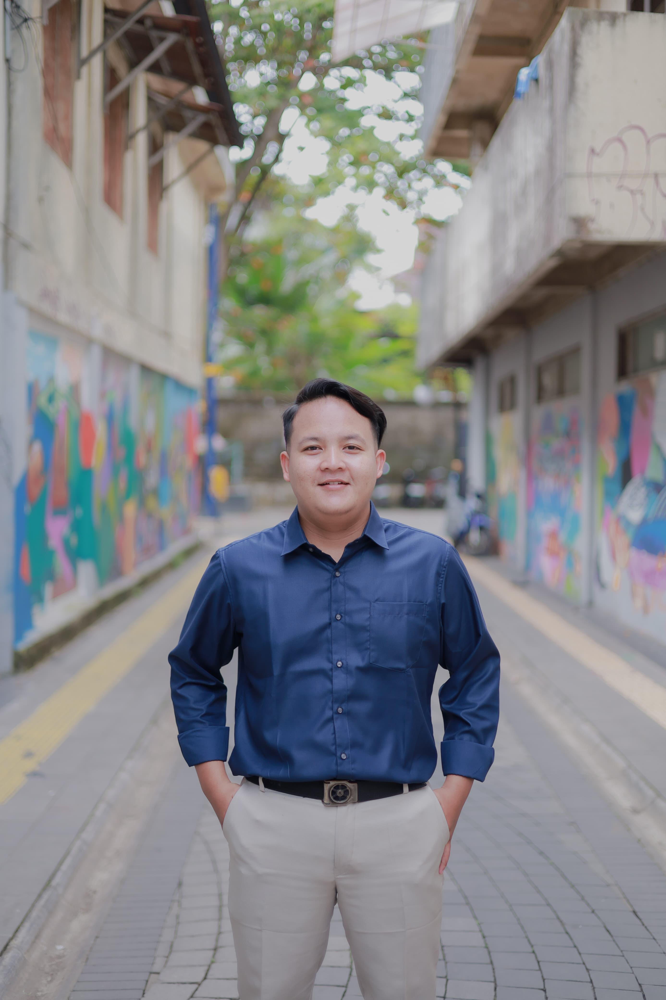
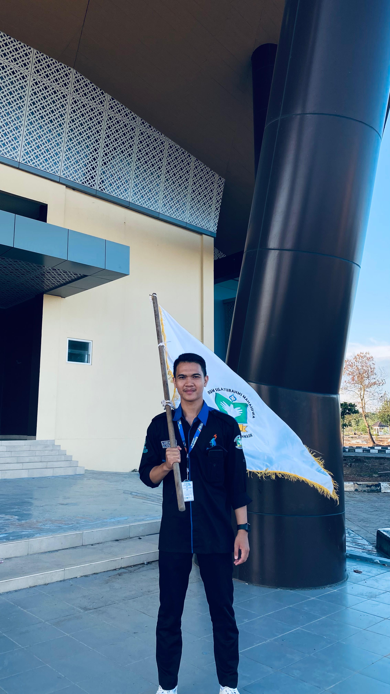
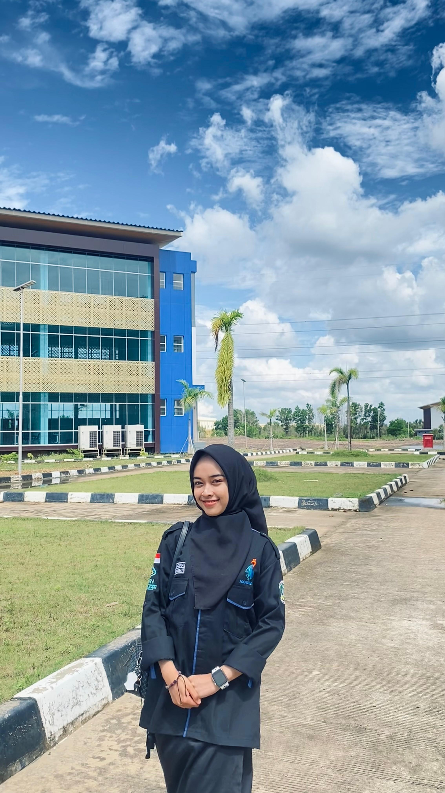

FOSMA Adalah Rumah
Dengarkan apa kata para tokoh, pimpinan, dan kader FOSMA UIN Antasari tentang peran, fungsi, dan dampak keberadaan organisasi ini.
Cerita Mereka Tentang FOSMA

Arif Rahman Heriansyah, S.Pd.I., M.A.,Gr.
ASN Dinas Pendidikan & Kebudayaan Prov. Kalsel (Wakil Ketua Umum FOSMA 2011-2012)
"Fosma adalah organisasi pertama saya ketika kuliah. Dari Fosma inilah saya banyak menempa soft skill..."

Nurhalisa Fariyanti
Bendahara Umum DEMA UIN Antasari 2025-2026
"Fosma merupakan rumah pertama saya di dunia organisasi sebagai mahasiswa..."

Radifa Nazhma Muntazhira
Wakil 1 Puteri Antasari 2024
"Bagi saya FOSMA UIN Antasari Banjarmasin bukan sekedar forum, melainkan rumah..."

Muhammad Firdaus
Wakil Ketua Umum DEMA Fakultas Syariah
"FOSMA adalah salah satu organisasi perkaderan atau organisasi yang diperuntukkan..."

Muhammad Sauqi Anshari
Ketua Umum HMJ Hukum Tata Negara
"Fosma merupakan organisasi yang dikhususkan bagi mahasiswa/i baru yang ada di UIN Antasari..."

Risa Madina
Anggota P3 Dema UIN Antasari 2025
"Forum Silaturahmi Mahasiswa (FOSMA) Antasari bagi saya bukan sekedar organisasi..."
×

Nama
Jabatan
Isi Kutipan...
Video: Dukungan Pimpinan Kampus
Simak langsung pesan dan dukungan dari Bapak Wakil Rektor III UIN Antasari Banjarmasin untuk FOSMA dan kader-kadernya.
Lihat video testimoni lainnya di kanal resmi FOSMA ANTASARI.
Kanal Informasi Resmi FOSMA
Ikuti semua kegiatan, kajian, dan pengumuman kami di media sosial resmi FOSMA UIN Antasari.